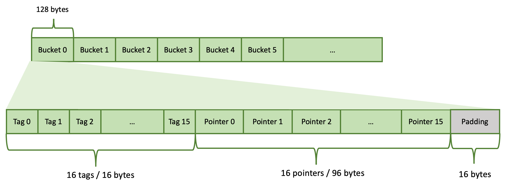
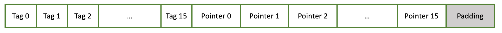
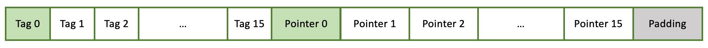
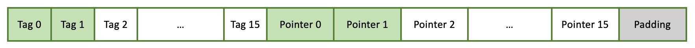
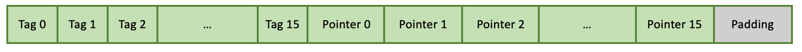

Hash Table¶
The hash table used in Velox is similar to the F14 hash table. The main difference is that the Velox hash table allows vectorized inserts and lookups, while F14 doesn’t.
Layout¶
The hash table is implemented as an array of buckets. It is a linear data structure. Each bucket uses 128 bytes (2 * 64 = 2 cache lines) and contains 16 slots. Each hash table entry occupies one slot. The hash table’s capacity is the total number of slots: total number of buckets * 16. The hash table’s capacity is always a power of 2.
Each slot consists of 2 pieces: a tag (7 bits) and a pointer (6 bytes). There are a total of 16 tags and 16 pointers in a bucket. These are stored tags first, followed by pointers. Each tag occupies 1 byte (only 7 bits are used). 16 tags occupy 16 bytes. Each pointer occupies 6 bytes. 16 pointers occupy 96 bytes. There are 16 bytes left unused at the end of the bucket. These are referred to as padding.

A hash table is never full. There are always some empty slots. Velox allows the hash table to fill up to
Individual buckets may be completely empty, partially filled or full. Buckets are filled left to right. If a bucket is partially full, then first N tags and N pointers are filled and the rest are free (N < 16).
Inserting an entry¶
To insert a new entry we need to figure out which slot to put it in. A slot is identified by bucket and offset within the bucket. First, we compute a hash of the entry. Then, we compute a tag and a bucket number from the hash.
We use 7 bits of the hash for the tag: bits 38-44 inclusive. We use N bits of the hash for the bucket starting from bit 8.
The number of bits used for the bucket is decided based on the hash table capacity. Remember that capacity is always a power of 2: \(2^n\). Each bucket stores 16 entries, hence, we need \(2^{(n-4)}\) buckets to store \(2^n\) entries. Hence, we need to use n-4 bits of the hash for the bucket.
Let’s say we have a hash table that can store a million entries: \(2^{20}\) = 1,048,576. Here, n = 20 and N = n - 4 = 16. We will use 16 bits for the bucket.
Given hash number:
01011011 11001010 011
We compute the tag as 1
bucket offset = bucket number * 128
bucket number = bucket offset / 128
The bucket offset is used to get to the bucket, in this case bucket number 10737. The candidate bucket can be empty, partially filled or full.
The bucket is empty.

In this case, we simply insert our entry into the first slot of the bucket. We store only the tag (7 bits of the hash value) in the hash table. The hash number itself is not stored. The pointer refers to memory outside of the hash table where the complete value is stored. This is usually a row in a RowContainer. The hash table can be viewed as an index on top of a RowContainer that helps locate records with matching keys faster. The hash table itself doesn’t store data or keys.

The bucket is partially filled.
For example, the bucket has one slot occupied (like above). In this case there is a possibility that the new entry is a duplicate of the one already stored. Hence, we compare the tag of the new entry with tags stored in the bucket. If none match, this entry is not a duplicate, so we store it in the next available slot in the bucket.

However, if one or more existing tags match the tag of the new entry, we follow the pointers to compare the keys to determine whether there is a match or not. If there is no match we insert a new entry. Otherwise, there is a duplicate. The row is chained to the row list pointed to by the row entry and no new entry is inserted.
The bucket is full.

First, we need to check if the new entry is a duplicate of one of the 16 entries stored in the bucket. We compare tags and if necessary follow the pointers to compare the keys. If there is a match, the row is chained to the row list pointed to by the row entry and no new entry is inserted. If there is no match, we go to the next bucket and repeat the process. In rare cases, we may end up checking many buckets until we find a duplicate existing entry or an empty slot for the new entry. That’s why it is important to ensure that the hash table is never full and there are enough gaps in the form of empty slots.
Resizing¶
If the hash table fills up beyond
Hash Modes¶
The description above covers the default bucket-based hash table (kHash mode). Velox also supports two optimized modes that avoid per-entry hashing and bucket probing when the key values allow it. The hash table analyzes the key data during build and selects the best mode automatically.
The three modes are:
kArray — Direct array lookup. Does not use the bucket-based hash table at all. Each key combination maps to an index in a flat array. Lookup is O(1) with no hashing or probing. Used when the combined key space is small enough to fit in an array.
kNormalizedKey — Bucket-based (same layout as kHash), but keys are encoded into a single 64-bit normalized key stored alongside each row. Key comparison uses this normalized key instead of comparing individual columns, which is faster for multi-column keys.
kHash — Bucket-based with full key comparison. Used when keys cannot be mapped to value IDs or normalized into 64 bits (e.g., complex types like ARRAY, MAP, ROW).
kArray Mode¶
In kArray mode, the bucket-based hash table is not used at all. Instead,
table_ is a flat array of pointers indexed directly by a value ID computed
from the key columns. Lookup is a single array access — no hashing, no tag
comparison, no probing.
VectorHasher tracks the range (min, max) and distinct values for each key column. Each column is assigned a multiplier so that multi-column keys produce a unique combined index:
index = valueId(col0) + valueId(col1) * multiplier1 + valueId(col2) * multiplier2 + ...
The value ID for a column is computed using one of two approaches:
Range-based: for numeric types, the value ID is
value - min. The array dimension for the column is the range (max - min + 1). The combined product of all column ranges must be < 2M. This is preferred when the range is within 20x of the distinct count (to avoid wasting array space on sparse ranges).Distinct-value-based: VectorHasher maintains a mapping from each unique value to a consecutive integer ID (0, 1, 2, …). This works for all supported types including VARCHAR, where each unique string gets its own ID. The combined product of per-column distinct counts must be < 2M. This is used when ranges are too large or not applicable (e.g., for VARCHAR, where values don’t have a numeric range).
The array size is the product of all per-column dimensions (ranges or distinct
counts), capped at kArrayHashMaxSize (2M entries = 16MB of pointer
storage).
Supported types: BOOLEAN, TINYINT, SMALLINT, INTEGER, BIGINT, VARCHAR, VARBINARY, TIMESTAMP. Types like REAL, DOUBLE, ARRAY, MAP, ROW do not support value ID tracking and cannot use kArray mode.
Examples:
Two BIGINT columns, 500 rows with values 0..499. Range per column is 500, combined range is 500 * 500 = 250’000 < 2M. Uses range-based kArray. (See
HashTableTest.int2DenseArray.)One VARCHAR column, 500 rows. Each unique string is assigned a consecutive ID (e.g., “apple” → 0, “banana” → 1, …). With 500 distinct values, the array has 500 entries. (See
HashTableTest.string1DenseArray.)Two BIGINT columns, 500 rows with spacing 1’000 (values 0, 1000, 2000, …). Range per column is 500’000, combined range is 250B — too large. But distinct count per column is 500, combined 250’000 < 2M. Uses distinct-value-based kArray. (See
HashTableTest.int2SparseArray.)
kNormalizedKey Mode¶
When the combined key space exceeds 2M entries but can be encoded into a single 64-bit integer, the table uses kNormalizedKey mode. This uses the same bucket-based layout as kHash, but stores a 64-bit normalized key immediately before each row in the RowContainer.
The normalized key is computed using the same multiplier-based encoding as kArray mode:
normalizedKey = valueId(col0) + valueId(col1) * multiplier1 + ...
During lookups, the normalized key is compared first — a single 64-bit integer comparison. If it doesn’t match, the full per-column key comparison is skipped. This is particularly effective for multi-column keys where comparing individual columns would require multiple memory accesses and type-specific comparisons.
Examples:
Two VARCHAR columns, 5’000 rows. Distinct count per column exceeds what fits in a flat array, but the combined distinct values fit in 64 bits. (See
HashTableTest.string2Normalized.)Two BIGINT columns, 10’000 rows with spacing 1’000 (values 0, 1000, 2000, …). Range per column is 10M, combined range overflows the 2M array limit, but fits in a 64-bit normalized key. (See
HashTableTest.int2SparseNormalized.)
Adaptive Prefetching in hashRows¶
When computing hashes in kNormalizedKey mode, hashRows reads the normalized
key stored immediately before each row pointer. Because rows are allocated from
a RowContainer arena and accessed in hash-partitioned order, successive row
pointers typically reference different cache lines. When
the working set exceeds the CPU’s last-level cache, each normalized key read
incurs a DRAM access.
To hide this latency, hashRows uses the AdaptivePrefetch class. During
the first 16 iterations, the class measures per-iteration time using a
conservative look-ahead of 4. After measurement, it computes an optimal look-ahead
distance based on the ratio of assumed DRAM latency to measured iteration time,
multiplied by a coefficient of 4. The result is clamped to [4, 32] — values
above 32 risk polluting L1 cache with too many outstanding prefetches.
kHash Mode¶
This is the fallback mode used when:
Key types don’t support value IDs (e.g., ARRAY, MAP, ROW, DOUBLE, REAL).
A single key column has more than 10’000 distinct values and the range overflows (cannot use normalized keys).
Both the combined range and combined distinct count overflow 64 bits.
In this mode, lookups compute a hash, probe buckets, compare tags, and then compare actual key values by following pointers to the RowContainer.
Examples:
One ROW(BIGINT, VARCHAR, BIGINT) column. ROW type does not support value IDs. (See
HashTableTest.structKey.)Six columns (5 BIGINT + 1 VARCHAR), 100’000 rows with spacing 1’000. The combined cardinality overflows 64 bits. (See
HashTableTest.mixed6Sparse.)
Mode Selection¶
The mode is selected by decideHashMode() using this priority:
If combined ranges < 2M → kArray (range-based).
If best combination of per-column ranges/distincts < 2M → kArray (mixed).
If combined ranges fit in 64 bits → kNormalizedKey.
If single key column with > 10’000 distincts → kHash (normalized key not worthwhile for a single wide column).
If combined distincts < 2M → kArray (distinct-value-based).
If both ranges and distincts overflow → kHash.
Otherwise → kNormalizedKey (combined distincts fit in 64 bits).
The selected mode is reported in the hashtable.hashMode runtime stat:
0 for kHash, 1 for kArray, 2 for kNormalizedKey.
See HashTableTest in velox/exec/tests/HashTableTest.cpp for tests
covering all three modes.
Use Cases¶
The main use cases for the hash table are Join and Aggregation operators. It is also used by RowNumber, TopNRowNumber, and MarkDistinct operators.
The HashBuild operator builds the hash table to store unique values of the join keys found on the build side of the join. The HashProbe operator looks up entries in the hash table using join keys from the probe side. The HashProbe operator does not insert new entries into the hash table and never triggers a resize. The pointers in the hash table refer to rows in a RowContainer that store individual rows for the build side of the join.
The HashAggregation operator stores unique grouping keys in the hash table. The pointers in the hash table refer to rows in a RowContainer that store grouping keys along with accumulators of the aggregate functions.
Implementation¶
The hash table is implemented by the HashTable class in namespace facebook::velox::exec.